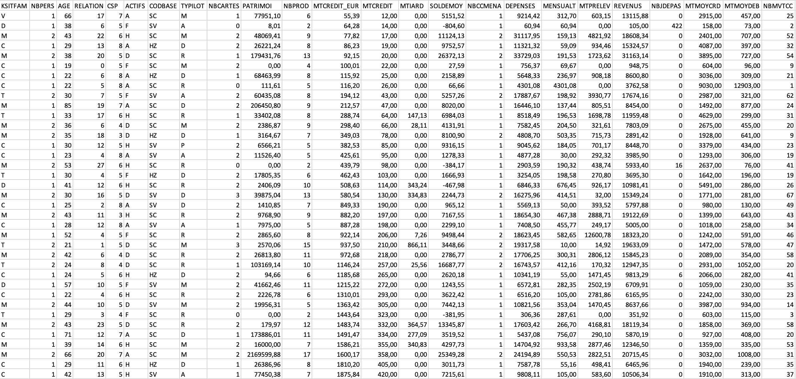
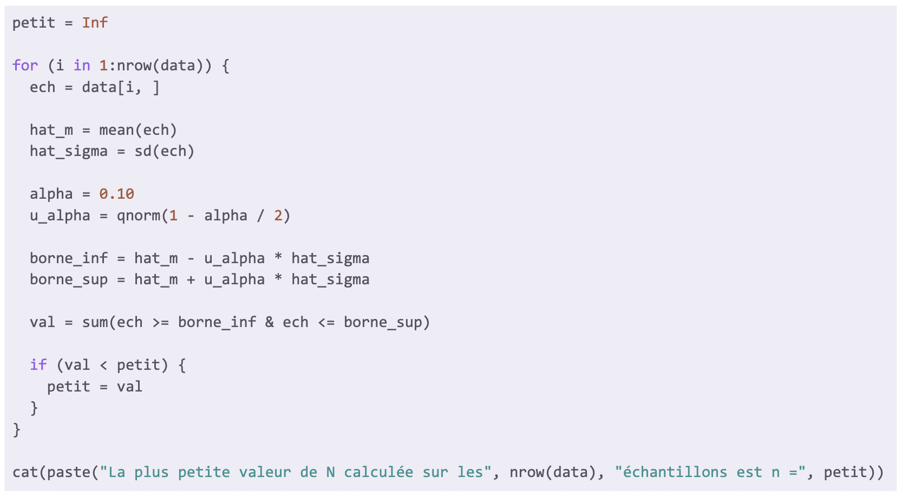
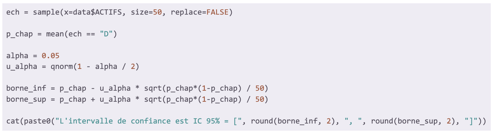

Cette capture d’écran montre un tableau de données brutes que j'ai utilisé lors de la SAÉ. On y voit des colonnes indiquant des variables comme l’âge, les dépenses ou encore le revenu. Ces données sont utilisées comme base pour estimer des paramètres statistiques à partir d’un échantillon et calculer des intervalles de confiance.
J’ai travaillé sur ce jeu de données en veillant à vérifier l’absence de valeurs manquantes, identifier les variables pour l’échantillonnage et préparer les données pour calculer les estimations.
Cette preuve montre que j’ai acquis AC 12.02 en m’assurant de la préparation et de la propreté des données avant les calculs.
Cette capture d’écran illustre un script R que j'ai développé pour déterminer la plus petite valeur de N (nombre d’observations) à retenir lors d’une estimation par échantillonnage. Le code parcourt chaque ligne d’un jeu de données et calcule la moyenne (hat_m) et l’écart-type (hat_sigma), puis déduit les bornes de l’intervalle de confiance à un niveau alpha choisi (ici, alpha = 0.10). Ensuite, le code identifie le plus petit nombre de valeurs qui restent incluses dans cet intervalle et affiche ce résultat.
J’ai structuré ce script en utilisant des boucles, des fonctions statistiques (mean(), sd(), qnorm()) adaptées à la statistique inférentielle, et une condition pour la recherche du plus petit N. La lisibilité du script est assurée par les indentations et un choix pertinent de noms de variables pertinent.
Cette preuve montre que j’ai acquis la compétence AC 12.01, car j’ai pris en compte les caractéristiques des données et les contraintes d’échantillonnage. Elle valide également la compétence AC 12.05, car j’ai compris et appliqué les concepts probabilistes pour calculer des intervalles de confiance fiables. Enfin, elle prouve aussi la compétence AC 12.06, car j’ai pris conscience de la variabilité des résultats selon l’échantillon considéré et son influence sur la précision des estimations.
Cette capture d’écran illustre un script R conçu pour calculer un intervalle de confiance à 95 % pour une proportion estimée à partir d’un échantillon aléatoire tiré d’un autre jeu de données. Le code sélectionne un échantillon de taille 50, puis calcule la proportion observée ayant un caractère particulier (ici D). Ensuite, il déduit les bornes inférieure et supérieure de l’intervalle en utilisant la formule de l’intervalle (loi normale), et affiche le résultat.
J’ai structuré ce script avec des fonctions statistiques clés (mean(), qnorm()), et respecté les bonnes pratiques d’écriture pour assurer la lisibilité et la compréhension du code (indentation, noms de variables explicites).
Cette preuve démontre que j’ai acquis la compétence AC 12.01, car j’ai su adapter la méthode de calcul aux caractéristiques de la variable étudiée et à la taille de l’échantillon. Elle valide aussi la compétence AC 12.05, car j’ai compris et appliqué les concepts probabilistes pour mesurer l’incertitude d’une estimation (l’intervalle de confiance). Enfin, elle illustre la compétence AC 12.06, car j’ai pris conscience de la variabilité des résultats due à l’échantillonnage et la taille de l’échantillon.
R / Excel
Dans cette SAÉ, j’ai été placé dans la posture d’un chargé d’étude statistique. Mon objectif était d’estimer des paramètres à partir d’un échantillon, en tenant compte de la marge d’erreur liée à l’échantillonnage. Ce travail m’a permis de mieux comprendre la distinction entre échantillon et population ainsi que les enjeux liés à la fiabilité des estimations en fonction de la taille d'échantillon.
J’ai mobilisé les ressources statistique inférentielle (R2.08) pour estimer les paramètres et calculer des intervalles de confiance, ainsi que probabilités 2 (R2.06) pour l'utilisation de théorèmes de convergence tels que la loi des grands nombres et le théorème central limite (TCL).
J’ai effectué des tirages aléatoires sur un jeu de données réelles, calculé des estimations ponctuelles, déterminé des intervalles de confiance, étudié la notion de population stratifié et mis en place des automatismes. J’ai ensuite interprété ces estimations et évalué leur précision selon la taille des échantillons ou les paramètres étudiés.
J’ai appris à distinguer population et échantillon, à comprendre la variabilité des résultats due à l’échantillonnage, à utiliser des outils probabilistes pour calculer une estimation, et à rendre compte de mes résultats de façon rigoureuse.
Compétences développées :
— AC 12.01 |Réaliser que les sources de données ont des caractéristiques propres à considérer (variation, précision, mise à jour...)
J’ai su identifier les variables importantes pour l’échantillonnage et tenir compte des données afin d’assurer la validité des estimations.
— AC 12.02 |Comprendre qu’une analyse correcte ne peut émaner que de données propres et préparées
J’ai vérifié les jeux de données pour voir s'il y avait des valeurs manquantes ou aberrantes avant d’effectuer les calculs.
— AC 12.05 |Comprendre l'intérêt de l’utilisation d’un modèle probabiliste
J’ai utilisé des intervalles de confiance et des outils probabilistes pour mesurer l’incertitude des estimations et interpréter les résultats de manière rigoureuse.
— AC 12.06 |Appréhender la notion de fluctuation d'échantillonnage, notamment à l’aide de simulations probabilistes
J’ai pris conscience que la taille de l’échantillon influence les résultats obtenus, et j’ai appliqué ce principe dans mes calculs et conclusions.